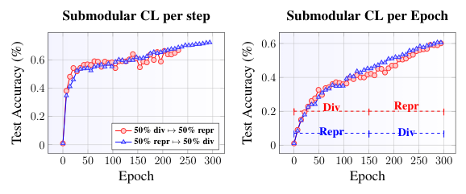
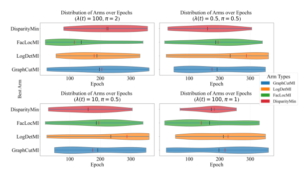
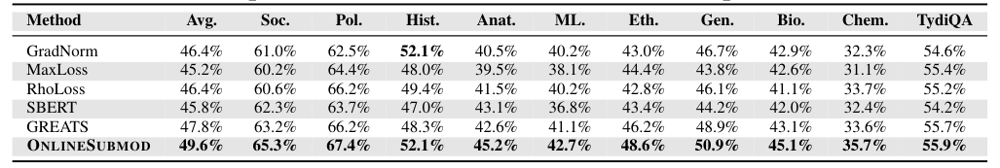
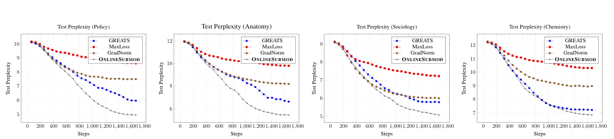
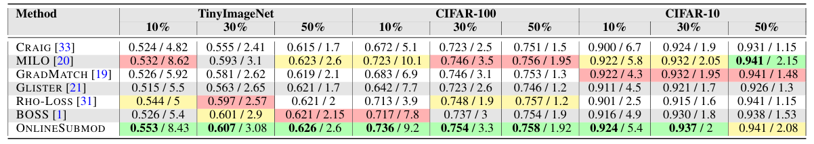
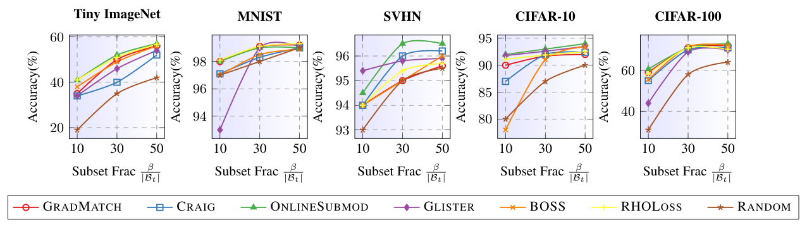
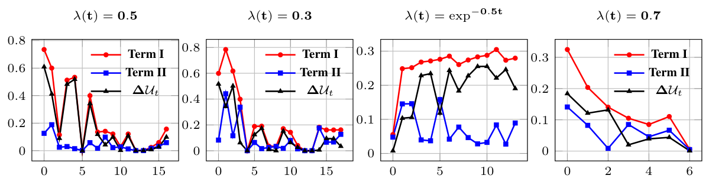
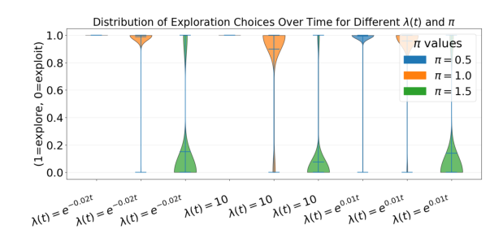
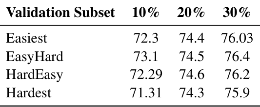

Bandit Guided Submodular Curriculum for Adaptive Subset Selection
Curriculum learning trains on easy examples first and harder ones later. The idea is old and intuitive, but it leaves open what "easy" means for this model at this point in training, and a schedule fixed in advance can simply be wrong. We show that the curriculum can be chosen online instead, by letting a validation signal decide what kind of subset to train on next.
OnlineSubmod treats several submodular selection functions, some favouring representative examples and others diverse ones, as the arms of a multi-armed bandit. At each step it picks an arm, uses it to select a subset of the batch, and trains on that subset. The reward is an estimate, from gradients, of how much that subset would reduce validation loss. The policy has no regret against the best arm in hindsight, and it beats fixed curricula and adaptive selection methods on vision and LLM fine-tuning.

Submodular functions as arms
A submodular function scores a set with diminishing returns: the more similar points a subset already has, the less a new one adds. Different functions encode different ideas of a good subset. Facility location, \(\sum_{i \in V} \max_{j \in X} s_{ij}\), rewards covering the data. Log-determinant, \(\log\det(S_X)\), and disparity-sum, \(\sum_{i \neq j \in X} (1 - s_{ij})\), reward diversity. Graph cut trades the two off. Each is maximised under a size constraint by the standard greedy algorithm, with a \((1 - 1/e)\) guarantee.
At step \(t\) the model sees a batch \(B_t\) and trains on a subset of size \(\beta\). The arms are \(K\) monotone submodular functions \(\mathcal{A} = \{f^{(1)}, \dots, f^{(K)}\}\), and choosing arm \(a\) means training on
\[ S_t = \arg\max_{S \subseteq B_t,\; |S| \le \beta} f^{(a)}(S). \]Ingredient 1: a reward from the validation set
The value of a subset is how much one SGD step on it would reduce the loss on a validation example:
\[ U_t(B, z^{\text{val}}) = \ell(z^{\text{val}}, \theta_t) - \ell\big(z^{\text{val}}, \tilde\theta_{t+1}(B)\big), \qquad \tilde\theta_{t+1}(B) = \theta_t - \eta_t \nabla_\theta \tfrac{1}{|B|}\textstyle\sum_{z \in B} \ell(z, \theta_t). \]Evaluating this for every candidate subset would need a training step each. Two first-order Taylor expansions give the marginal value of one example instead:
\[ \Delta U_t(z_i \mid B^{(\lt i)}, z^{\text{val}}) \approx \eta_t\, g_{\theta_t}(z_i) \cdot g_{\theta_t}(z^{\text{val}}) \;-\; \eta_t^2\, g_{\theta_t}(z_i)^{\top} H_{z^{\text{val}}} \Big( \tfrac{1}{|B^{(\lt i)}|} \textstyle\sum_{z \in B^{(\lt i)}} g_{\theta_t}(z) \Big). \]The first term is the influence of \(z_i\)'s gradient on the validation example. The second penalises its similarity to the examples already chosen. We approximate the Hessian by the identity, and compute gradients on LoRA adapters for LLMs and on the last layer for vision models. An arm's reward is the expected marginal value of the subset it would pick,
\[ \vartheta(a \mid B_t) = \mathbb{E}_{z^{\text{val}},\; z_i \in S_a} \Big[ \Delta U_t\big(z_i \mid S_a^{(\lt i)}, z^{\text{val}}\big) \Big], \]which is computed before the update, so scoring the arms costs no extra training step.
Ingredient 2: explore, then exploit
The policy uses the arm with the highest estimated reward, \(\hat a_t = \arg\max_a \vartheta(a \mid B_t)\), except that with some probability it tries an arm at random. The exploration probability shrinks over training according to two schedules, \(\lambda(t)\) and \(\pi(t)\). Regret is measured against the best arm for each batch,
\[ \mathrm{Regret}_T = \sum_{t=1}^{T} \max\big\{0,\; \vartheta(a^{*}_t \mid B_t) - \vartheta(a_t \mid B_t)\big\}. \]Under assumptions on the exploration schedules, on how well the utility is approximated, and on a gap \(\varrho\) between the best arm and the others, the expected per-step regret satisfies
\[ \mathbb{E}[\mathrm{Regret}_t] = O\!\left(\frac{1}{t}\right) + O\!\left( \frac{K^{3/2}\,(\max_a C^{(a)} + C^{*})}{\varrho} \sqrt{\frac{\log t}{t}} \right). \]It goes to zero, faster with fewer arms, better utility approximations and a larger gap. Arms that are nearly tied are harder to tell apart.

The training loop
Each training step does four things:
- Batch. Receive a batch and compute per-example gradients.
- Score. Estimate each arm's reward \(\vartheta(a \mid B_t)\) on a couple of validation points.
- Choose. Use the best arm, or occasionally a random one.
- Train. Select a subset greedily with the chosen function and take a gradient step on it.
Results
LLM fine-tuning. We fine-tune on the LESS instruction data, keep half of every 16-example batch, and compute the reward on just two random validation points. On MMLU subjects and TyDiQA, OnlineSubmod has the best average, 49.6% against 47.8% for GREATS, and matches or beats every baseline on each subject. Its test perplexity also falls fastest during training.


Vision. With a ResNet on TinyImageNet, CIFAR-100 and CIFAR-10, at budgets of 10%, 30% and 50%, OnlineSubmod has the highest or tied-highest accuracy in every column. Its speed-up over full training is close to MILO's, which relies on expensive offline pre-filtering: on TinyImageNet at 10% it reaches 0.553 accuracy at an 8.43× speed-up, against MILO's 0.532 at 8.62×. When it selects individual samples rather than whole batches, it is the best method on four of the five datasets at every subset size and competitive on MNIST.


What the bandit does. The two parts of the reward change their balance over training, which is what lets the preferred arm change. The sharpness schedule \(\pi\) controls how often the policy explores: at \(\pi = 0.5\) it almost always exploits, and at \(\pi = 1.5\) it mostly explores.


The validation set does not need to be hand-picked. Computing the reward on the easiest validation points, the hardest, or a mix changes final accuracy by at most 1.8 points at the smallest budget and by half a point or less at larger budgets.

Limitations
- Validation is part of the method. The reward depends on a validation signal, and its size, representativeness and cost matter.
- Approximations. The reward uses first-order expansions and an identity Hessian, and the regret bound depends on how good that approximation is.
- Scale. The experiments cover fine-tuning and vision benchmarks. Large pretraining runs are future work.
Takeaway
A curriculum does not have to be designed in advance. Treating selection rules as arms, and scoring them by what they would do for validation loss right now, lets the training data shift from one kind of subset to another as the model changes, with a guarantee that the choices converge to the best rule.
Citation
@inproceedings{chanda2025bandit,
title = {Bandit Guided Submodular Curriculum for Adaptive Subset Selection},
author = {Chanda, Prateek and Agrawal, Prayas and Polu, Lokesh Reddy and Sureka, Saral and Kshirsagar, Atharv and Ramakrishnan, Ganesh},
booktitle = {Advances in Neural Information Processing Systems},
year = {2025}
}